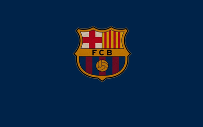

Club honors
- Spanish champions league 18-19
- 17-18 Spanish King's cup champion
- Spanish champions league 17-18
- Spanish champions league 15-16
- Champion of Spanish Serie A in 2015 14-15 season
- Champions League in 2015 14-15 season
- Champion of Spanish King's Cup in 2015 14-15 season
- 2013 12-13 Spanish Super Cup champion
- 2013 12-13 Spanish serie a championship
- 2012 11-12 Spanish King's cup champion
- 2011 European Super Cup champion
- 2011 10-11 Spanish serie a championship
- Champions League in 2011 10-11
- 2011 World Club Cup champion
- 2011 10-11 Spanish Super Cup champion
- 2010 09-10 Spanish serie a championship
- 2010 09-10 Spanish Super Cup champion
- 2009 08-09 Spanish serie a championship
- 2009 World Club Cup champion
- 2009 European Super Cup champion
- 2009 08-09 Spanish Super Cup champion
- 2009 08-09 Spanish King's cup champion
- Champions League 2009 08-09
- 2006-05 Super Cup winner
- 2006 05-06 Spanish serie a championship
- Champions League 2005-06
- 2005 2004-05 Spanish Super Cup champion
- 2004-05 Spanish first division championship
